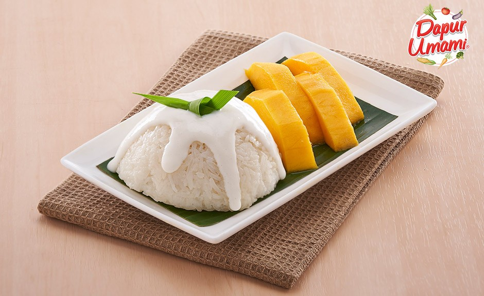
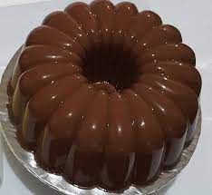
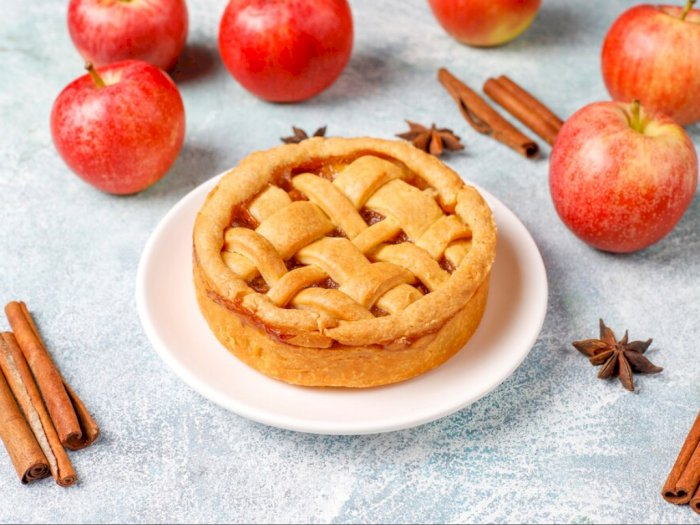

Mango sticky rice
Mango sticky rice
Mango sticky rice atau ketan mangga adalah hidangan penutup Thailand yang terbuat dari beras ketan, mangga, dan santan. Makanan ini dapat dimakan dengan garpu, sendok, atau langsung dengan tangan.
Lihat ResepPuding cokelat
Puding cokelat
Puding merupakan salah satu menu hidangan penutup yang paling sering disebut dessert. Puding juga memiliki banyak penggemar karena rasanya yang manis dengan tekstur yang lembut dan kenyal.
Lihat ResepWaffle

Waffle
Waffle adalah salah satu kudapan dari Belgia yang terbuat dari adonan beragi saat dituangkan di antara dua piring panas bermotif.
Lihat ResepApple Pie
Apple Pie
Apple Pie adalah adalah pai buah yang isian utamanya adalah buah apel yang biasanya akan menimbulkan rasa manis seiring proses pemanggangan. Seringkali juga dicampur dengan bubuk kayu manis untuk memunculkan aroma dan gula palem untuk tambahan rasa manis.
Lihat Resep